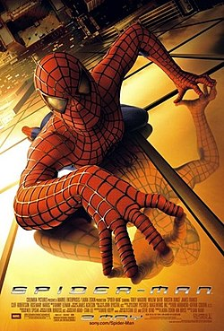
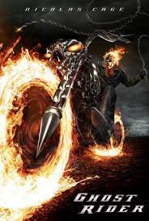
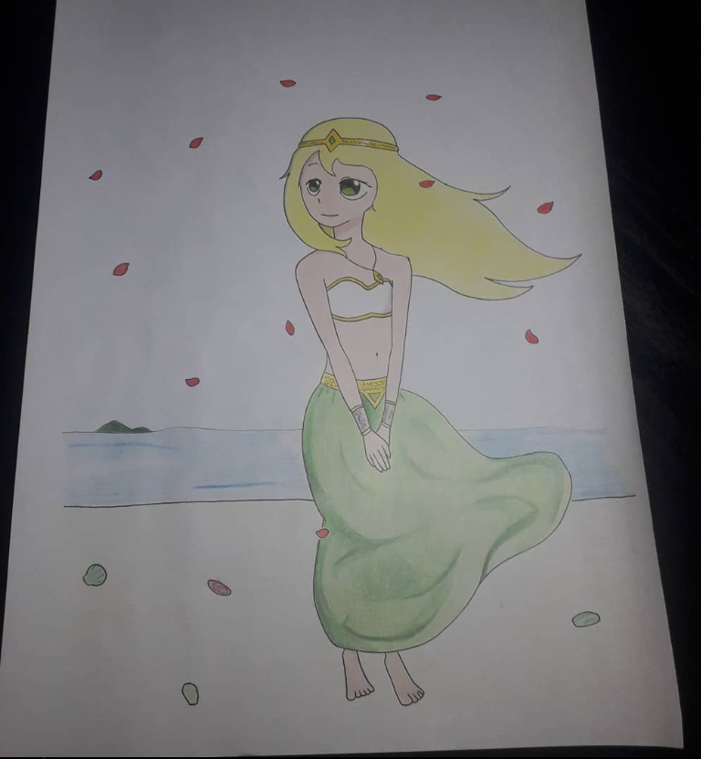
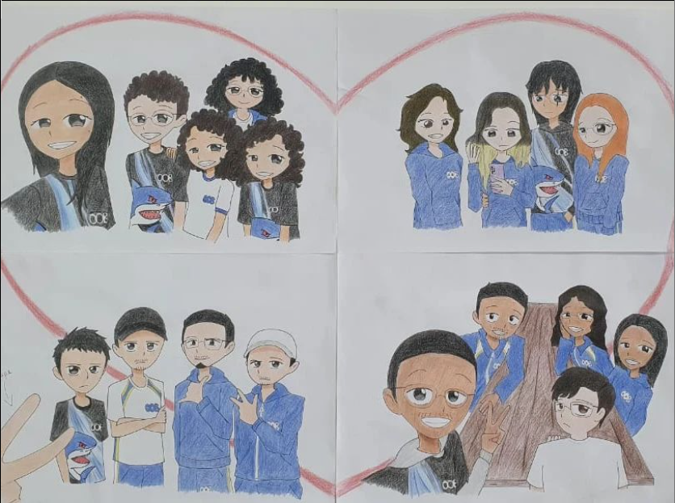
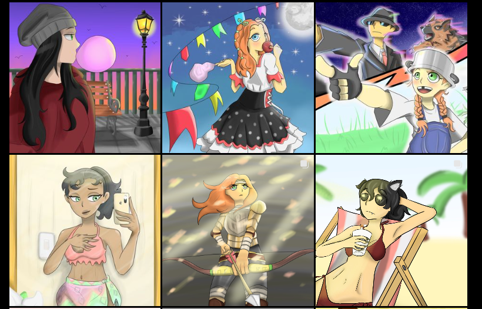
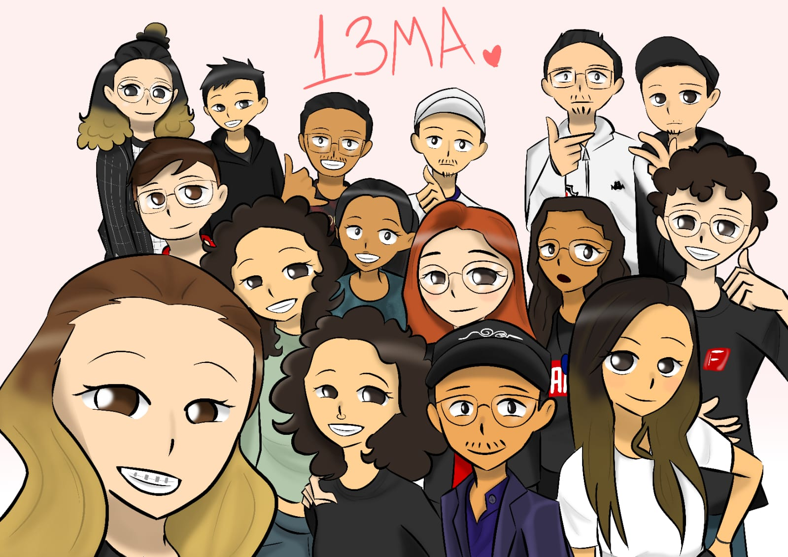

Começei a desenhar aos 6 anos. Nessa época, eu era muito fã do Homem-Aranha e do Motoqueiro Fantasma, então eu sempre tentava desenhar.
Obviamente os desenhos não ficavam bons, mas foi o começo para o meu gosto de desenho.


Com isso, eu acabei tentando me aperfoiçoar mais e mais, até que chegou uma outra inspiração para mim: os Animes.
Eles são animações japonesas baseadas em Mangás e Light Novels. Com isso, eu começei desenhando personagens de Shonen, como o Goku, Naruto e outros. Depois, desenhei pessoas, youtubers e outras coisas.
Por muito tempo, apenas desenhei no papel, na maioria das vezes, personagens que eu inventava ou pessoas da minha família.

Primeira foto do Instagram
Cheguei até a fazer desenhos para minha sala, seja para eventos ou por vontade própria, como um desenho de recordação.

Desenho que fiz para a minha sala em 2022
Foi seguindo assim até 2022, quando ganhei de presente uma mesa digitalizadora WACOM. Não é das melhores, mas certamente, para uma primeira, serve para muitas coisas.
Foi difícil de acostumar no ínicio, mas depois disso, dificilmente volto para o lápis e papel, por conta da quantidade de recursos oferecidos pelos sofwares.

Desenhos do meu Instagram

Desenho da minha sala feito digitalmente